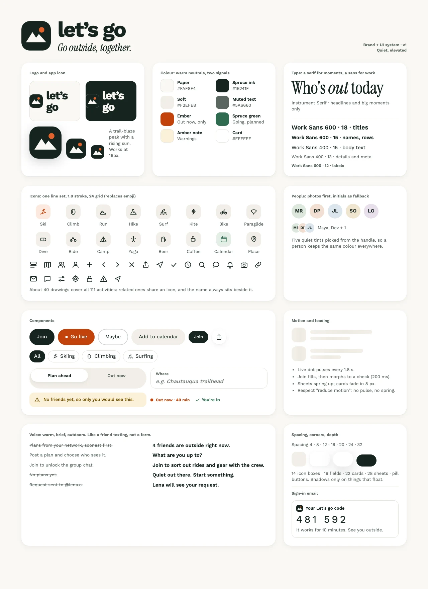
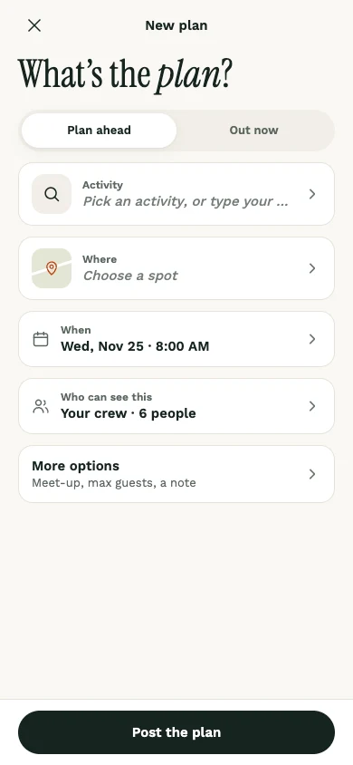
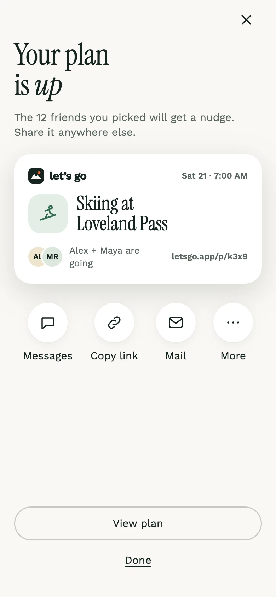
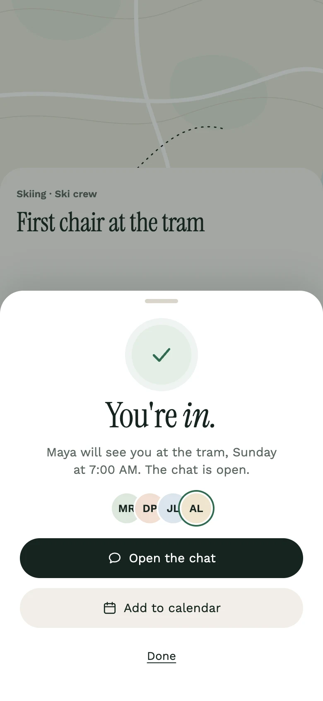
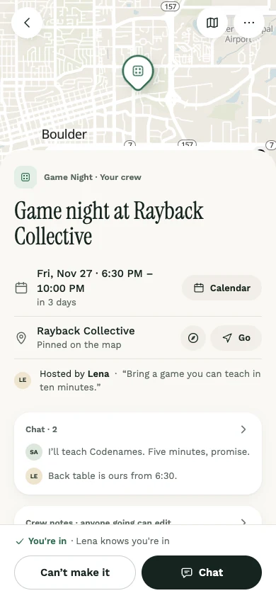
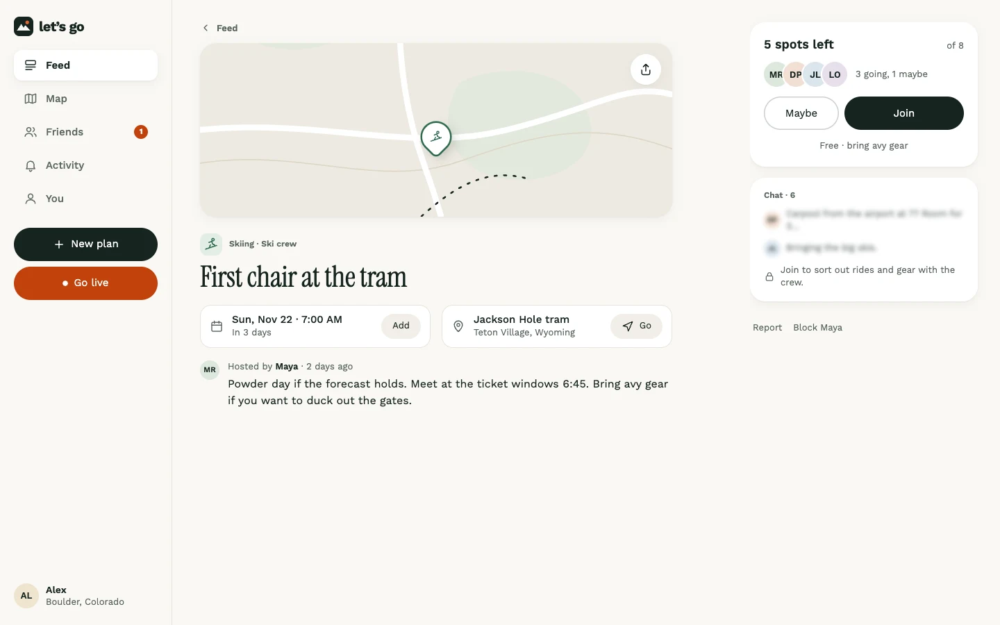
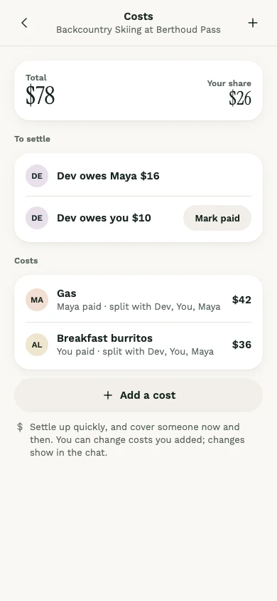

cd portfolio/omw.now && cat README.md
omw.
a small social app · product, brand, interface, copy, code · 2026
From “we should hang out” to a time and a place.
This page is about how I work with AI agents: the rules they follow, the reviews that check their work, and the calls I make myself.
You post a plan (“skiing at Loveland Pass on Saturday”) or say you’re out now, choose who sees it, and friends tap Join. People who join get a group chat, a calendar invite and directions.
I designed, wrote and built all of it, from the brand sheet to the database rules, working with AI agents in Claude Code. It runs on phones and desktops at omw.now.


- role
- Everything: product, brand, interface, copy, engineering, security
- platform
- A web app, one codebase for phone and desktop
- stack
- Expo + React Native Web, Supabase Postgres, Cloudflare
- made with
- Claude Code, with written rules the agents follow
cat brief.md
“We should go skiing sometime.”
Saturday, 7 AM, Loveland Pass. Maya’s driving.
- problem
- Plans start in a group chat and stall there. Nobody wants to be the one to pick a time, a place, and who’s driving. Social apps make it worse: they reward posting, not showing up.
- job
- Post a plan or say you’re out now. Choose who sees it. Friends tap Join and get a chat, a calendar invite and directions. Every plan ends with someone texting “omw”.
cat .claude/skills/prerelease/SKILL.md
Agents write most of the code, so I don’t trust any single one. Before anything ships, one command in Claude Code runs the same review every time, with two model families so one model’s blind spots don’t decide what ships.
# /prerelease (excerpts) Never commit, merge, push, deploy or run migrations as part of this skill. Those wait for the user’s own “commit and push”. 1. Start the automatic review: checks, the smoke test and an independent Gemini review, in the background. 3. Focused Claude reviews (parallel, at most 4 agents): security · correctness · offline and performance · design. Give each agent the list of changed files and the base commit, never your own opinion of the change. 5. Verify every finding. Open the file at the line and trace the scenario through the real code. Mark it confirmed, plausible or rejected. When both Gemini and Claude found the same problem independently, say so: that’s a strong signal. Re-rate the severity yourself; don’t keep a reviewer’s rating on trust.
- I tune the pipeline, not just run it.The first run’s Gemini review took 43 minutes on the high model. The next commit fixed the two findings it confirmed and capped Gemini at 15 minutes on a faster model.commit a680c4d
- Every change can be traced.40 of the 64 commits link the Claude Code session that made them, so any line can be followed back to the conversation that produced it.git log
- The docs are the agents’ brief.AGENTS.md, DESIGN.md, VALUES.md and SECURITY.md say what to build and how to check it, so every agent starts from the same rules.docs/
cat strengths.md
What the rest of this page shows, and where the proof lives in the repo.
- Systems, not screensEvery colour has one job: ember means happening now, and nothing else. About 40 line icons cover 111 activities. A component table says which part to use, and the words it may say.DESIGN.md
- Words as interfaceA voice guide, a glossary and house rules (never say “coming”). Five values drawn from Seneca, Aristotle and Confucius, each one a single line at the moment it matters, and never named.VALUES.md
- Ops rigour, shippedEvery feature passes five checks before it ships: security, design, UI, performance, offline. Every schema change gets a dated security review: 11 so far, the first with 16 fixes, plus a list of accepted risks.SECURITY.md
cat principles.md
Quiet, warm, outdoors, and always about meeting up. Four rules settled most arguments before they started.
- One clear action per place.Joining is one tap. No “Maybe”. Rarely used actions (copy, delete, report) live behind the ….
- Colour only where it means something.Ember is for out now. Spruce green is for going. Warnings are amber, never red and never ember.
- Like a friend texting, not a form.“What’s the plan?” “You in?” Name the person, the spot and the time: “Maya will see you at Eldo, Saturday at 7.”
- Plan for the bad day.Trip plans, emergency contacts, offline maps and a “not back yet” check. Then get out of the way and enjoy the good one.
open design/brand.png && cat tokens.json
The brand sheet came first. Tokens, type and components live in code, and one document is the source of truth for me and for the agents.


{ "paper": "#FAF8F4", // every page "ink": "#16241F", // text, primary buttons "ember": "#C2410C", // out now, and only that "plan": "#2F6B4F", // going, planned "warn": "#FBF1D9", // never red, never ember "type": { "display": "Instrument Serif", // one italic accent "text": "Work Sans", // never under 13 px }, "space": [4, 8, 12, 16, 20, 24, 32], "corners": { "field": 16, "card": 22, "sheet": 28 } }
$ grep -n ember docs/DESIGN.md 35: Ember means happening now. Never use it for errors, links or decoration. 36: Warnings are amber, never red and never ember.
open screens/core-loop/
Make a plan, share it, join, show up. Every screen moves someone one step closer to meeting in person.








diff mockups/plan.png shipped/plan.png
I designed 39 screens up front, then let real use edit them. The rule in the repo: when a mockup and the app disagree, the app wins, and the change gets written down.


@@ the app wins when it disagrees with the mockup @@ - let’s go+ OMW: the name is the promise, every plan ends with “omw”- [Go live]+ [Out now] “go live” sounds like social media- [Maybe] [Join]+ [Join] one clear answer; Can’t go is on the plan page- a conditions sheet+ fact rows: meet-up, forecast, drive time, sunrise- host buttons on the page+ one … menu over the map- crew radio in the nav+ cut. chat is text again
What I cut, and why:
- Garmin inReach check-insBuilt, reviewed and removed the same day, with its tables and stored passwords: phones’ satellite SOS already covers emergencies.migration 0040
- Crew radioPush-to-talk shipped, then came out of the app the next day. Chat is text again.DESIGN.md
- MaybeA plan needs a yes or a no. Guests get Join and Can’t go.DESIGN.md
open screens/feed --phone --desktop
One codebase, two shapes. Under 1024 px: a bottom tab bar with a raised Create button, and sheets that rise from the bottom. Above it: a sidebar, a readable main column, and a right column for the one next action.

Every release is checked at both widths in a headless browser: no console errors, no crash screens, no sideways scrolling on phones. The shipped screens on this page come from those checks.
cat voice.md
Warm, brief, specific. The copy is part of the design system, with a glossary the agents follow as strictly as the colour tokens.
| instead of | OMW says |
|---|---|
| No plans yet. | Quiet out there. Start something. |
| Join to unlock the group chat. | Join to sort out rides and gear with the crew. |
| Invalid code. | That code didn’t work. Check the newest email, or send a new code. |
| Location sharing enabled. | Shares the spot you name, never your live location. |
| Be reliable. | People are counting on you now. If that changes, say so early. |
crewplanyou’re inout nowsee you therecomingRSVPuserseventsgo live
open screens/trailhead/
I ski, climb and ride, so the details that matter at 5 AM in a parking lot with no signal are in the product.



- reliable
- Joined means yes.
- technical
- Know the route, the gear and the conditions.
- safety
- Plan for the bad day, then enjoy the good one.
- team
- Go at the pace of the slowest.
- generous
- An empty seat is the easiest thing to give.
sed -n '/the checklist/,/Offline/p' AGENTS.md
## Shipping a new feature: the checklist Every new feature goes through all five before it’s committed and deployed. Report the result of each. 1. Security review. Row-level security on every new table (who can read, insert, update, delete), column grants, … Add a row to `docs/SECURITY.md`. 2. Design review. Fits the app’s structure and voice (`docs/DESIGN.md`): existing components and tokens, one clear action per place, no draft-level shortcuts. 3. UI check, in three tiers (fast by default, thorough now and then) … 4. Performance review. Parallel requests instead of chains, no reloads on every render or event (debounce bursts), small payloads, … 5. Offline. Works with no signal: last copy shown (`src/lib/offline.ts`), actions queued and sent later (`src/lib/outbox.ts`) or clearly unavailable, and nothing lost.
There is no app server: the browser talks to Postgres directly, so the database rules are the only security boundary. I treat them like a finance system. Every schema change gets a dated review in SECURITY.md, 11 so far, with an accepted-risks list and a checklist for the next change.
wc --summary
Expo SDK 58 · React Native Web · Supabase (Postgres, Auth, Realtime, Storage) · Cloudflare Workers · MapLibre + OpenFreeMap · Photon · Resend
open --walkthrough